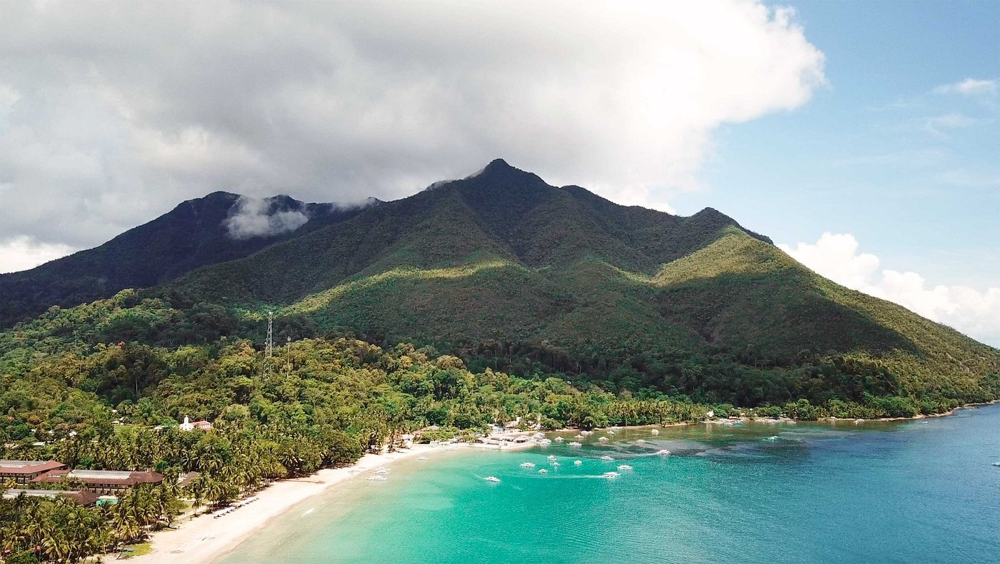
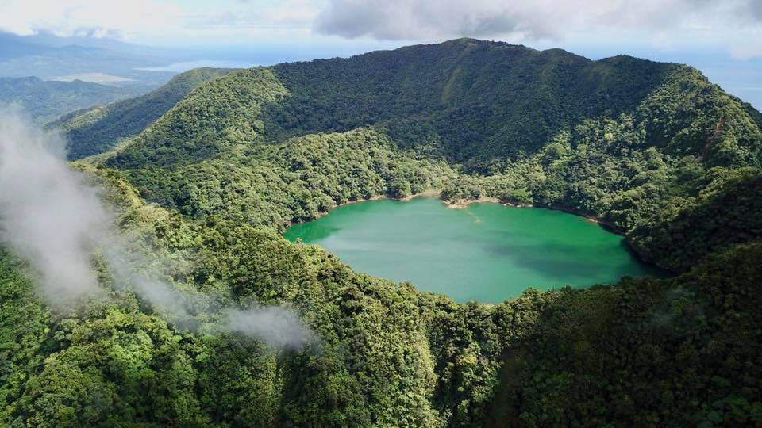
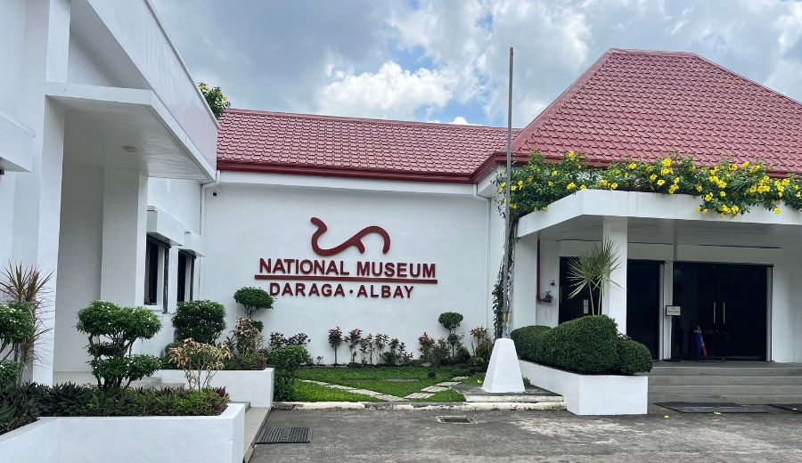
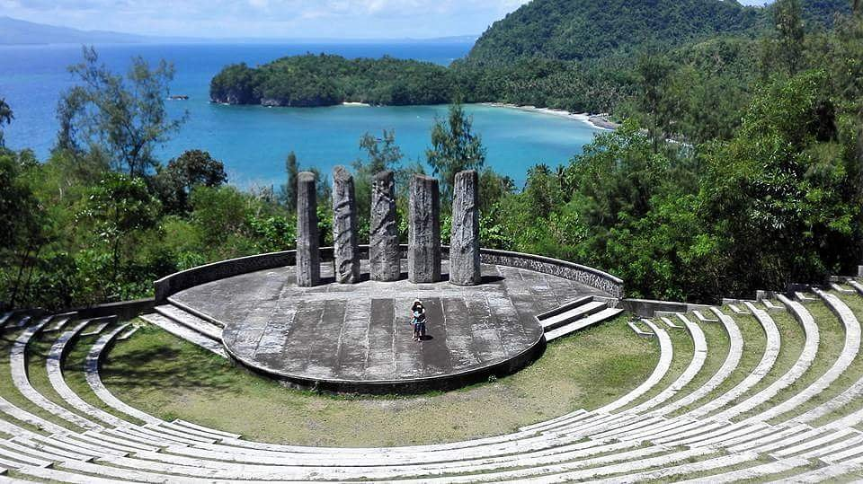
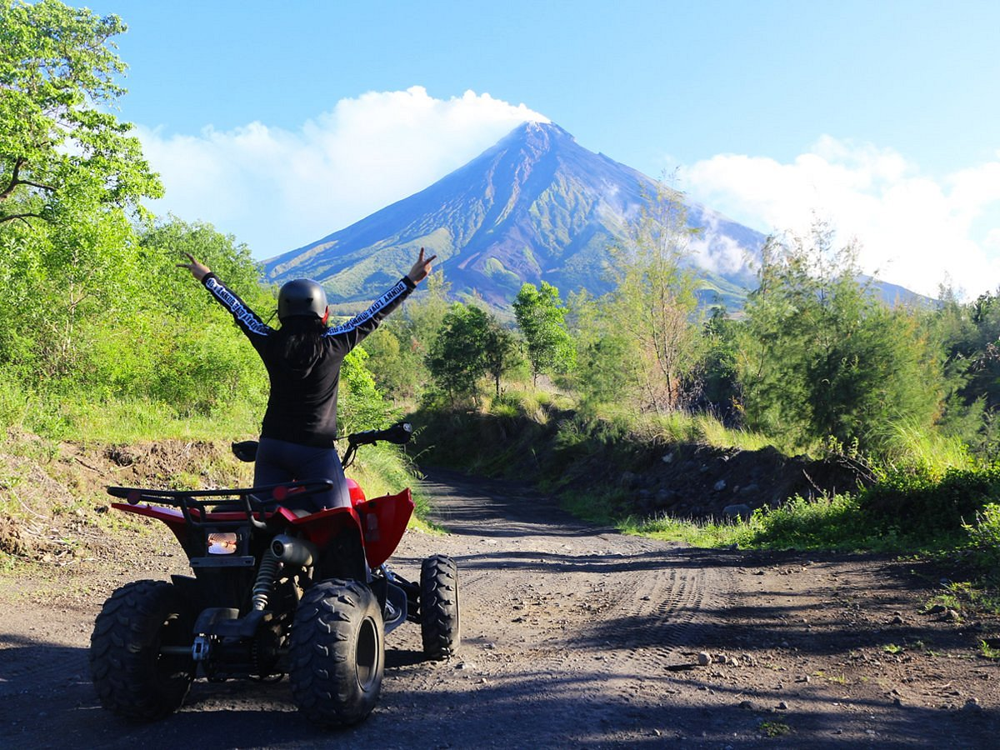

Albay is known for its beautiful tourist spots, from relaxing beaches and peaceful lakes to scenic mountains and cultural landmarks. Each place offers a unique experience for visitors, whether you want adventure, nature, or history. Explore the different categories below to discover what Albay has to offer.

Relaxing beach destinations and seaside views.

Mountain views, hiking, and scenic high places.

Peaceful lakes and calm nature attractions.

Main cities and towns in Albay with attractions and culture.

Important heritage sites and landmarks in the province.

Culture, traditions, festivals, and local identity.

Public parks and family-friendly outdoor spaces.

Exciting experiences for travelers who want activities.
Albay is a great destination for travelers who want to experience nature, culture, and adventure all in one place. It offers beautiful scenery and unique local experiences.
See the perfect cone of Mayon Volcano and enjoy beaches, hills, and relaxing natural views across the province.
Discover local traditions, colorful festivals, and the everyday lifestyle of the people in Albay.
Experience exciting activities like hiking, ATV rides near Mayon, and exploring different outdoor spots.
Try famous Bicol dishes like Bicol Express and other spicy and flavorful local specialties.
The best time to visit Albay depends on your preferred activities, but weather plays an important role in your travel experience.
From March to May, the weather is sunny and perfect for sightseeing, outdoor adventures, and photography.
From June to October, expect cooler weather and fewer tourists, but there may be frequent rain showers.
Visit during events like Daragang Magayon Festival to experience culture, parades, and local celebrations.